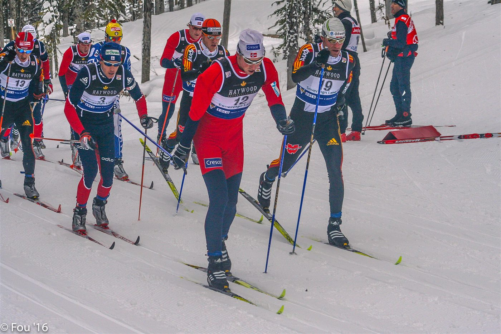
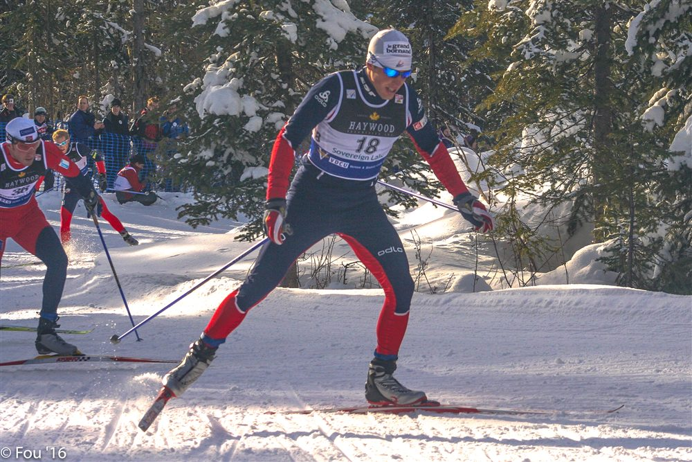
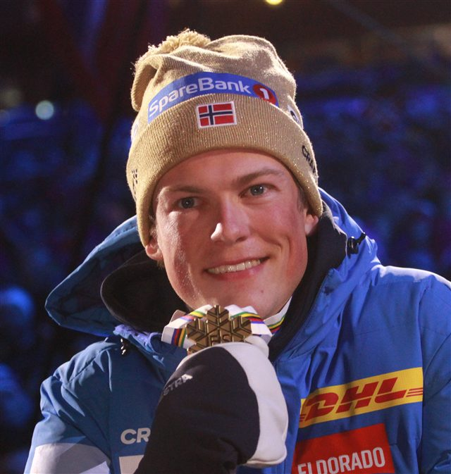
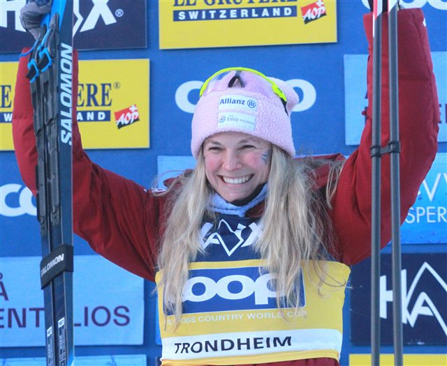
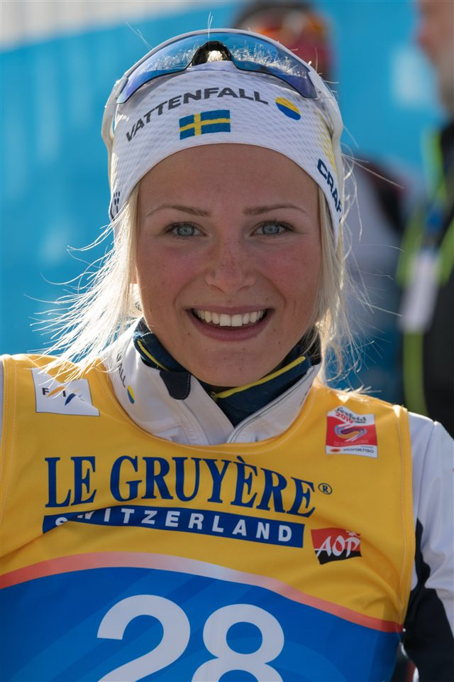
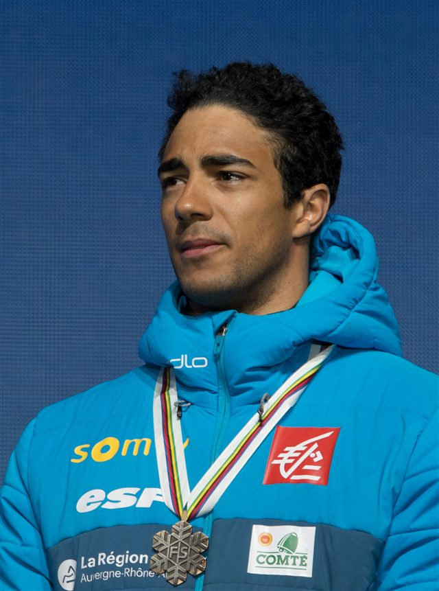
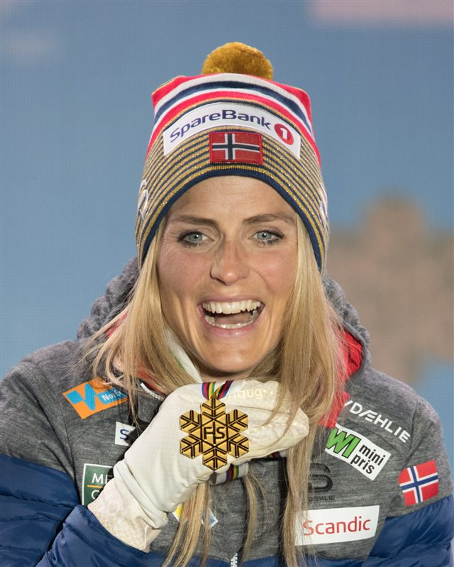

Le classique
Skis parallèles dans des traces parallèles : la technique historique, fluide et exigeante.

50 km
La plus longue épreuve
1,4 km
Le parcours de sprint
2
Techniques de glisse
Le ski de fond est l'épreuve d'endurance reine des sports d'hiver : des parcours vallonnés de 1,4 à 50 km, parcourus à la seule force des skis et des bâtons. C'est le berceau historique du ski nordique.
Deux techniques se partagent les épreuves : le classique, skis parallèles dans les traces, et le libre (skating), en pas de patineur, plus rapide. Du sprint explosif au 50 km marathon, chaque format réclame des qualités différentes.
La Norvégienne Therese Johaug et le sprinteur Johannes Klæbo incarnent la domination scandinave sur la discipline.

Skis parallèles dans des traces parallèles : la technique historique, fluide et exigeante.
Un pas de patineur en canard, plus rapide : la technique reine des épreuves modernes.
Une qualification chronométrée puis des séries en duel sur ~1,4 km. Explosivité maximale.
Une moitié en classique, une moitié en libre, avec changement de skis en pleine course.
Quatre relayeurs par équipe, deux en classique puis deux en libre. La tactique d'équipe prime.
Départ individuel au chrono ou départ groupé (mass start) au coude-à-coude, selon le format.
Lieu
Stade de fond du Lago di Tesero — Val di Fiemme
Capacité
≈ 10 000 places le long du parcours
Accès
Navettes JO depuis Cavalese et Predazzo. Parkings relais fléchés en vallée.
Billet
À partir de 30 € (sprint) · 95 € (50 km)
Température
Vallée de montagne — prévoir -6 °C, 1 000 m d'altitude

 Norvège
Norvège
 États-Unis
États-Unis
 Suède
Suède
 France
France
Norvège